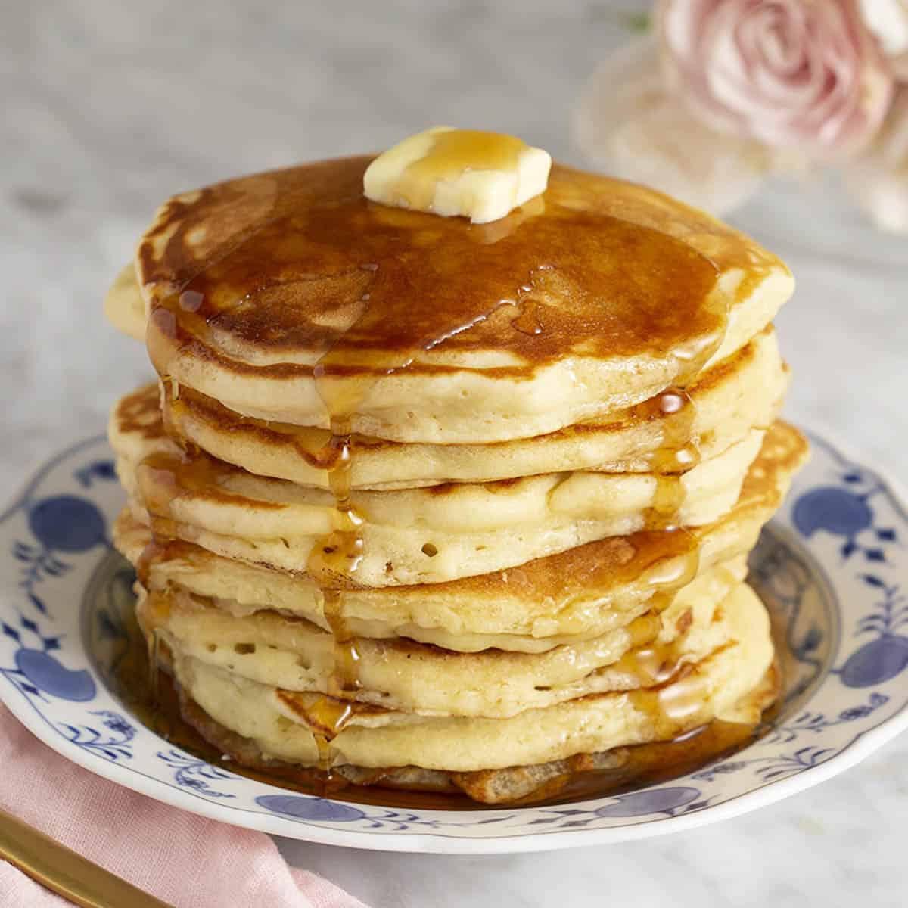

Pancakes
Description
Easy and quick to make. One of the best pankcake recipes around!

Cooking Information
- Prep: 5 mins
- Cook: 15mins
- Total: 20mins
- Servings: 8
- Yield: 8 Servings
Nutrition Facts
Per Serving: 158 calories; protein 4.5g; carbohydrates 21.7g; fat 5.9g; cholesterol 37.7mg; sodium 503.6mg.
Ingredients
- 1 1/2 cups all-purpose flour
- 3 1/2 teaspoons baking powder
- 1 teaspoon salt
- 1 tablespoon white sugar
- 1 1/4 cups milk
- 1 egg
- 3 tablespoon butter, melted
Directions
- Step 1
- In a large bowl, sift together the flour, baking powder, salt and sugar. Make a well in the center and pour in the milk, egg and melted butter; mix until smooth.
- Step 2
- Heat a lightly oiled griddle or frying pan over medium-high heat. Pour or scoop the batter onto the griddle, using approximately 1/4 cup for each pancake. Brown on both sides and serve hot.